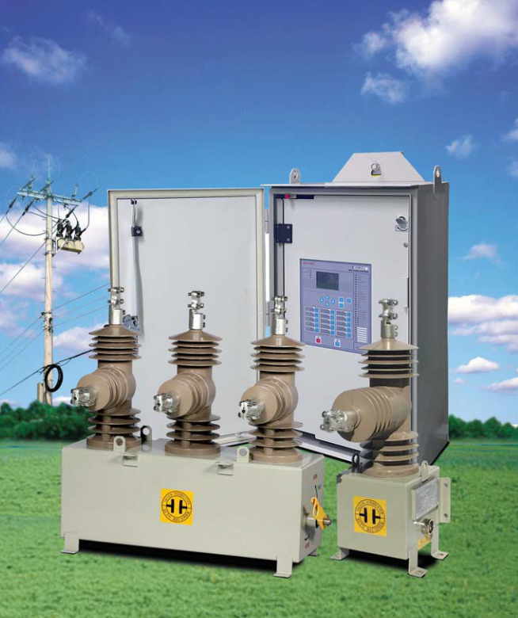

Reconectadores Electricos
Los reconectadores eléctricos son interruptores inteligentes que protegen las redes de media tensión.
Detectan fallas, las aíslan y reconectan automáticamente el servicio, minimizando interrupciones y daños.
Son clave para una energía confiable, segura y eficiente.
Características Generales
El Reconectador de aislamientosólido monofásico / trifásico ENTEC (EPR-1S / EPR-1, EPR- 1- 16, EPR-2 y EPR-3) es un equipo con tecnología avanzada, siendo un producto confiable y libre de mantenimiento, diseñado para usarse en líneas aéreas y en subestaciones para niveles de tensión de 15.5kV, 27kV y 38kV. El mecanismo principal del reconectador sólido es el actuador magnético, que realiza disparo tripolar con enclavamiento mecánico, y el material del buje está hecho de HCEP (resina epoxi cicloalifática hidrofóbica). Los interruptores de vacío están completamente encapsulados en los bujes. El reconectador está protegido con un gabinete de material de acero inoxidable y puede usarse en áreas de humedad tropical, moderada y severa con resistencia a la corrosión. El control ENTEC consiste en una RTU (unidad terminal remota) dentro de un gabinete de control, que cuenta con espacio para alojar el modem. A solicitud del cliente, es posible suministrar una maleta de pruebas y sus accesorios para la prueba de todas sus funcionalidades, dicha maleta es la misma para reconectadores de 15kV, 27kV o 38kV
Además, el Reconectador ENTEC se ha probado completamente en laboratorios acreditados como KEMA, CESI o KERI, de acuerdo con las normas internacionales ANSI 37.60 e IEEE 62271-111.

Entorno de instalación
- • Montaje en poste o subestación
- • Accesorios incluidos: cables de alimentación y control, soporte para montaje y herrajes para los DPS
- • Temperatura: -40 ° C a 80 ° C • Altitud: hasta 3000M
HCEP (Resina Epoxi)
- • Material dieléctrico sólido
- • Rendimiento comprobado en áreas de alta contaminación
- • Amigable con el medio ambiente
- • Alta expectativa de vida
- • Alta resistencia de arco eléctrico
- • Protección contra rayos UV
- • Sistema anti vandálico
- • Cumple con los requisitos de ANSI para la contaminación
Actuador Magnético
- • 10.000 operaciones mecánicas/eléctricas
- • Libre de mantenimiento
- • Bajos costos de instalación y operación
- • Tiempo de apertura = 15.2ms
- • Tiempo de cierre < 55ms
- • Tiempo de arqueo = 6.3ms


- • Permite la instalación de 2 PT de alimentación, cuando se tiene doble alimentación conmuta la fuente de forma automática.
- • Las etiquetas del control y la potencia están disponibles en español.
- • Incluye barrajes y conectores para los terminales, el herraje para los DPS fijados al tanque de potencia y estructura de montaje
- • Se incluye marcación de número de activo a solicitud del cliente


- • La operación manual con pértiga de apertura y bloqueo anula el cierre de forma remota o desde el control.
- • Incluye los protectores de fauna para los bujes de carga y fuente.
- • Incluye PT (o PT’s si tiene doble alimentación) y DPS ethernet externo reemplazable con su respectivo patch cord.
- • Incluye los cables (con sus respectivos pasacables) de control y alimentación, longitud mínima de 6mts.
Comunicación remota
Para lacomunicacióncuentaconlos siguientes puertos nativos en el equipo:- • USB(tipo B), 2 RS-232 y 485, 2 RJ45 TCP/IP10/100 base T independientes (opcional 1 puerto de fibra óptica + 1 puerto RJ45)
- • Para conexión inalámbrica se cuenta con wifi, SMSy MMS
- • DNP3.0, LAN, IEC60870-5-101 / 104 e IEC61850 ed 2.0 con envío de mensajes MMS, SNTP y GOOSE (mensajes publicados: 16; Mensajes suscritos: 32) con teroperabilidad entre IED’s de diferentes fabricantes.
Acceso remoto para configuración, lectura de eventos, registro de datos y operaciones remotas de apertura, cierre, habilitar/des habilitar protecciones y recierres y cambio de grupo
- • La operación manual con pértiga de apertura y bloqueo anula el cierre de forma remota o desde el control.
- • Incluye los protectores de fauna para los bujes de carga y fuente.
- • Incluye PT (o PT’s si tiene doble alimentación) y DPS ethernet externo reemplazable con su respectivo patch cord.
- • Incluye los cables (con sus respectivos pasacables) de control y alimentación, longitud mínima de 6mts.
Medición
- • Corriente
- • Voltaje (lado de la fuente y lado de carga)
- • Potencias (KW, KVA y KVAR) y demanda (KWH)
- • Factor de potencia
- • Frecuencia
- • Datos de perfil de carga de energía y oscilografías disponibles en formato comtrade
- • Desbalances y Armónicos
- • Cálculo cantidad de pérdidas de tensión lado fuente / Lado carga y su consolidado.
Para las variables anteriores es posible configurar la banda muerta.
Monitoreo
El equipo cuenta con los siguientes leds indicadores de estado en el panel frontal:- • Grupo de protección
- • Funciones habilitadas/deshabilitadas
- • Estado de batería y fuente de alimentación.
- • Estado abierto/cerrado/bloqueo del mecanismo.
- • Causa de la última apertura
- • Tensión lado fuente/lado carga
- • Puerta abierta/cerrada
- • Etiquetas configurables por el usuario